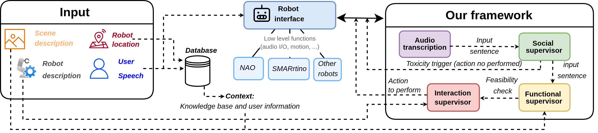
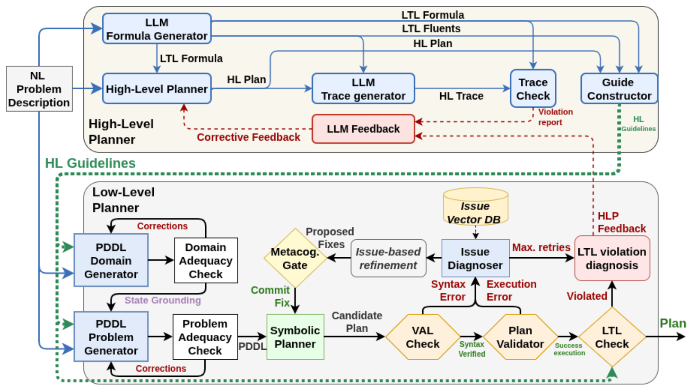

Research
My research focuses on integrating Large Language Models with social and industrial robotics, with the goal of enhancing the cognitive capabilities of robotic systems. By exploiting these capabilities a robot can adapt its behaviour to the context in which it operates, so that the same cognitive architecture can be applied across multiple domains by changing only the contextual descriptions. I am also interested in combining the common-sense knowledge of LLMs with formal planning, to obtain plans that are both sensible and executable.
A cognitive architecture for Human-Robot Interaction
During the first year of my PhD I developed a cognitive architecture that enhances the interaction capabilities of robots in terms of context-consistency and safety. Its modular structure allows the management of different aspects of a conversation between a human and a robot. Each module is called a Supervisor and handles a specific task:
- Social Supervisor — ensures that the conversation contains socially acceptable and safe topics.
- Database module — leverages the robot's long-term memory through RAG techniques to provide more accurate and context-consistent responses.
- Functional Supervisor — combines long-term information from memory with the common-sense knowledge of LLMs to assess the safety and feasibility of what is happening.
- Interaction Supervisor — manages the robot's output: what it does, what it says, and the emotions or feedback it displays to the user.

The architecture reasons at a high level and is robot-agnostic: the only input it needs is a natural-language description of the robot, of the actions it can perform, and of the domain in which it operates. From this description, the Supervisors identify which actions the robot can or cannot perform, given its physical limitations and the safety criteria provided.
To evaluate it, we ran a communication test between two robots (NAO and SMARRtino) running the same architecture, which had to reason about their embodiment and explain to each other what they can do with it.
Video not loading? Watch it on YouTube →
📄 Related paper: A Cognitive Architecture for Embodied AI based on LLM Common-sense Knowledge (ICSR 2025)
Natural language programming for industrial robots
I then worked on bringing the architecture into a collaborative/industrial context. Focusing on a use case with a UR5e collaborative robot for dishwashing, I designed the system so that a user with no programming or robotics experience can control the robot using natural language.
Thanks to the robot's long-term memory and the reasoning of its Supervisors, the robot can be taught how to perform a task according to specific parameters, and it remembers the execution details of each task — such as the force to apply or the type of movement to use for a specific type of dish. The resulting framework enables a continuous feedback loop: the human observes the robot's behaviour, the robot adapts it according to the human's instructions, and the updated behaviour is stored in memory.
📄 Related paper: A Use Case of Natural Language Programming for Industrial Robots (ECMR 2025)
Common-sense planning under temporal constraints
LLMs can turn natural-language instructions into plans, but when used directly as planners they often produce plans that look coherent yet are not executable: action or object names that don't match the domain, skipped preconditions, or violated ordering constraints. These failures grow quickly as the number of temporal constraints increases ("first do A, never do B until C…").
With CoSP-TL we combine the common-sense knowledge of LLMs with formal symbolic planning, using a two-level hierarchical architecture:
- High-Level Planner: reads the problem and constraints in natural language, encodes the constraints as a linear temporal logic formula over finite traces (LTLf) and iteratively refines a natural-language plan, as a sequence of subgoals, until it satisfies the formula.
- Low-Level Planner: grounds each subgoal into executable PDDL and checks it with a symbolic validator. Errors are repaired iteratively, and solved issues are stored in a vector database and reused (RAG) to fix similar errors later.

We evaluated CoSP-TL on the LexiCon benchmark in three IPC domains (Blocksworld, Logistics and Sokoban) with 0, 1 and 2 temporal constraints, comparing it with an LLM used directly as a planner. With more constraints the baseline degrades sharply, while CoSP-TL stays stable:
| Temporal constraints | LLM-as-planner | CoSP-TL |
|---|---|---|
| 0 | 80% | 100% |
| 1 | 40% | 83% |
| 2 | 23% | 83% |
Plans that run on the ground-truth domain and satisfy the LTLf constraints. Small-scale evaluation (ten problems per domain and constraint level).
📄 Related paper: CoSP-TL: Common Sense Enhanced Planning under Temporal Logic Constraints with LLMs (GenPlan 2026) · Code